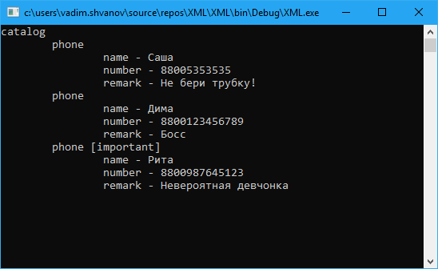

Что такое XML?
XML (eXtensible Markup Language) — это универсальный расширяемый язык для разметки информации. Он позволяет структурировать, хранить и передавать информацию в определенном формате. Особенность данного языка заключается в том, что самоопределяемым, что позволяет самостоятельно расширять набор условных меток — тегов. Используя их, можно формировать данные в виде древовидной структуры, когда одни элементы содержат в себе другие.
Пример XML разметки
В качестве примера можно рассмотреть телефонную книгу, в которой хранятся такие данные как имя человека, номер телефона и заметка.
<?xml version="1.0" encoding="UTF-8"?> <!--XML заголовок-->
<catalog> <!--Корневой элемент-->
<phone> <!--Элемент данных-->
<name>Саша</name> <!--Первое значение данных-->
<number>890953317</number> <!--Второе значение-->
<remark>Не бери трубку!</remark> <!--Третье значение-->
</phone> <!--Закрытие элемента данных-->
<phone>
<name>Дима</name>
<number>890512309</number>
<remark>Босс</remark>
</phone>
<phone group="important"> <!--Используем атрибут для дополнительного свойства-->
<name>Рита</name>
<number>890198735</number>
<remark>Невероятная девчонка</remark>
</phone>
</catalog> <!--Завершение всех данных-->
Первым строкой в XML файле должен идти заголовок, который указывает какую версию XML использовать, а также кодировку текста. Затем должен обязательно идти единственных корневой элемент, в который включены все остальные данные. В дальнейшем все данные разбиваются на объекты, включающие другие объекты и так далее, в зависимости от структуры данных. Также у объекта могут быть указаны дополнительные свойства, они называются атрибуты.
Работа с XML на языке C#
Для взаимодействия с XML файлом в языке программирования C# имеется несколько отличных библиотек, но для начала мы рассмотрим одну из самых простых реализаций, расположенную в пространстве имен System.XML. Данная библиотека позволяет как читать, так и сохранять данные в XML файлы.
Реализуем две основные операции, это чтение Xml данных из файла, и сохранение данных в Xml файл. Рассмотрим основной метод приложения.
Program.cs
static void Main(string[] args)
{
// Устанавливаем кодировку консоли.
// Нужно только если при использовании англоязычной Windows
// на консоль вместо кириллицы выводятся знаки вопроса (??? ????? ??????)
Console.OutputEncoding = Encoding.Unicode;
// Читаем Xml файл.
ReadXmlFile("example.xml");
// Ждем ввода пользователя.
Console.ReadLine();
// Создаем структуру данных.
var catalog = new Catalog() // Корневой элемент
{
Phones = new List<Phone>() // Коллекция номеров телефонов.
{
new Phone() {Name = "Саша", Number = 890953317, Remark = "Не бери трубку!", Important = false}, // Запись номера телефона.
new Phone() {Name = "Дима", Number = 890512309, Remark = "Босс", Important = false},
new Phone() {Name = "Рита", Number = 890198735, Remark = "Невероятная девчонка", Important = true}
}
};
// Пишем в файл.
WriteXmlFile("result.xml", catalog);
// Сообщаем пользователю о завершении.
Console.WriteLine("ОК");
Console.ReadLine();
}
Чтение XML файла на языке C#
Возьмем в качестве исходного файла пример указанный выше, для простоты удалив комментарии.
Program.cs
/// <summary>
/// Прочитать Xml файл.
/// </summary>
/// <param name="filename"> Путь к Xml файлу. </param>
private static void ReadXmlFile(string filename)
{
// Создаем экземпляр Xml документа.
var doc = new XmlDocument();
// Загружаем данные из файла.
doc.Load(filename);
// Получаем корневой элемент документа.
var root = doc.DocumentElement;
// Используем метод для рекурсивного обхода документа.
PrintItem(root);
}
/// <summary>
/// Метод для отображения содержимого xml элемента.
/// </summary>
/// <remarks>
/// Получает элемент xml, отображает его имя, затем все атрибуты
/// после этого переходит к зависимым элементам.
/// Отображает зависимые элементы со смещением вправо от начала строки.
/// </remarks>
/// <param name="item"> Элемент Xml. </param>
/// <param name="indent"> Количество отступов от начала строки. </param>
private static void PrintItem(XmlElement item, int indent = 0)
{
// Выводим имя самого элемента.
// new string('\t', indent) - создает строку состоящую из indent табов.
// Это нужно для смещения вправо.
// Пробел справа нужен чтобы атрибуты не прилипали к имени.
Console.Write($"{new string('\t', indent)}{item.LocalName} ");
// Если у элемента есть атрибуты,
// то выводим их поочередно, каждый в квадратных скобках.
foreach(XmlAttribute attr in item.Attributes)
{
Console.Write($"[{attr.InnerText}]");
}
// Если у элемента есть зависимые элементы, то выводим.
foreach(var child in item.ChildNodes)
{
if (child is XmlElement node)
{
// Если зависимый элемент тоже элемент,
// то переходим на новую строку
// и рекурсивно вызываем метод.
// Следующий элемент будет смещен на один отступ вправо.
Console.WriteLine();
PrintItem(node, indent + 1);
}
if(child is XmlText text)
{
// Если зависимый элемент текст,
// то выводим его через тире.
Console.Write($"- {text.InnerText}");
}
}
}
В результате получим следующий вывод на консоль

Создание XML файла на языке C#
Для начала нам нужно определить классы модели данных, то есть указать свойства, которые хотим хранить в файле.
Phone.cs
namespace XML
{
/// <summary>
/// Телефонный контакт.
/// </summary>
public class Phone
{
/// <summary>
/// Имя.
/// </summary>
public string Name { get; set; }
/// <summary>
/// Телефонный номер.
/// </summary>
public int Number { get; set; }
/// <summary>
/// Заметка.
/// </summary>
public string Remark { get; set; }
/// <summary>
/// Важный контакт.
/// </summary>
public bool Important { get; set; }
/// <summary>
/// Приведение объекта к строке.
/// </summary>
/// <returns> Имя. </returns>
public override string ToString()
{
return Name;
}
}
}
Catalog.cs
using System.Collections.Generic;
namespace XML
{
/// <summary>
/// Каталог телефонных номеров.
/// </summary>
public class Catalog
{
/// <summary>
/// Список телефонных номеров.
/// </summary>
public List<Phone> Phones { get; set; } = new List<Phone>();
}
}
Теперь реализуем метод формирования Xml файла на основе имеющихся данных.
Program.cs
/// <summary>
/// Сохранить данные в Xml файл.
/// </summary>
/// <param name="filename"> Путь к сохраняемому файлу. </param>
/// <param name="catalog"> Сохраняемые данные. </param>
private static void WriteXmlFile(string filename, Catalog catalog)
{
// Создаем новый Xml документ.
var doc = new XmlDocument();
// Создаем Xml заголовок.
var xmlDeclaration = doc.CreateXmlDeclaration("1.0", "UTF-8", null);
// Добавляем заголовок перед корневым элементом.
doc.AppendChild(xmlDeclaration);
// Создаем Корневой элемент
var root = doc.CreateElement("catalog");
// Получаем все записи телефонной книги.
foreach(var phone in catalog.Phones)
{
// Создаем элемент записи телефонной книги.
var phoneNode = doc.CreateElement("phone");
if (phone.Important)
{
// Если установлен атрибут Важный в true,
// то создаем и добавляем атрибут к элементу записи телефонной книги.
// Создаем атрибут и нужным именем.
var attribute = doc.CreateAttribute("group");
// Устанавливаем содержимое атрибута.
attribute.InnerText = "important";
// Добавляем атрибут к элементу.
phoneNode.Attributes.Append(attribute);
}
// Создаем зависимые элементы.
AddChildNode("name", phone.Name, phoneNode, doc);
AddChildNode("number", phone.Number.ToString(), phoneNode, doc);
AddChildNode("remark", phone.Remark, phoneNode, doc);
// Добавляем запись телефонной книги в каталог.
root.AppendChild(phoneNode);
}
// Добавляем новый корневой элемент в документ.
doc.AppendChild(root);
// Сохраняем документ.
doc.Save(filename);
}
/// <summary>
/// Добавить зависимый элемент с текстом.
/// </summary>
/// <param name="childName"> Имя дочернего элемента. </param>
/// <param name="childText"> Текст, который будет внутри дочернего элемента. </param>
/// <param name="parentNode"> Родительский элемент. </param>
/// <param name="doc"> Xml документ. </param>
private static void AddChildNode(string childName, string childText, XmlElement parentNode, XmlDocument doc)
{
var child = doc.CreateElement(childName);
child.InnerText = childText;
parentNode.AppendChild(child);
}
В результате, после выполнения программы, мы получим файл Xml с идентичной структурой и данными.
Заключение
Здесь рассмотрено элементарное взаимодействие с Xml файлами. В дальнейшем мы обязательно вернемся к данной теме. Исходный код доступен в репозитории https://github.com/shwanoff/XML.